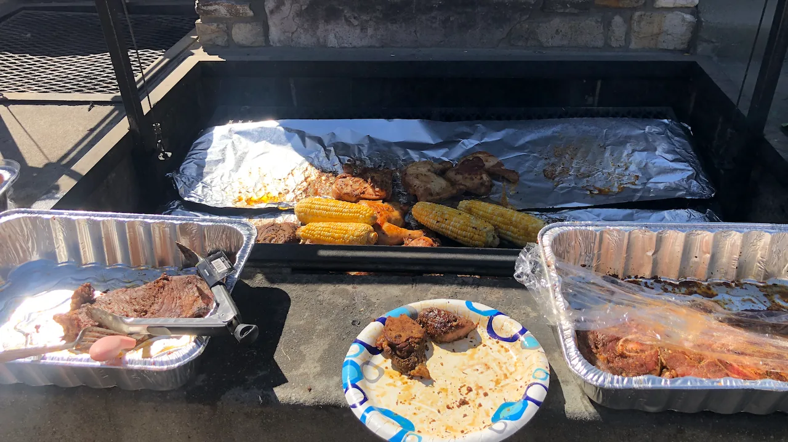

Live → Blog
May 9, 2022

As I celebrate the passage of time, the new wrinkles, and the one white hair that is going strong, I was inspired to reflect on 28 lessons that I have learned in the time I have been on this earth. I listed them out on a note document on my phone and was going to share them before realizing there was really one key thing I had learned in life: Things will be fine and I will be okay. With this knowledge, I feel empowered to love even with the guarantee of loss, to dream even with the guarantee of failure, and to live even with the guarantee of death.
I choose to love with all of my heart and all of my being even though I know my loved ones will some day leave. I have lost loved ones to death, to dementia, and to good old paths diverging. In all of those cases, I have rarely, if at all, ever wished I had loved less. Because when I think back to the love shared and the memories of the timeless experiences, I am usually more glad for the majority of those. Yes, the ending memories are usually unpleasant, but I rarely have to endure the grief of it alone. Because of loving as purely as I know how, there is usually a fair amount of people loving me as purely as they know how, and their companionship always gets me to the other side of grief--if ever there is another side to grief. Though not perfectly (and not easily by any means), things usually end up fine and I am usually okay.
My ambition knows no bounds: from my professional pursuits to my desire to cultivate joy and peace for my soul. I always aspire for the impossible. Often times I fail. I do not always get the program I want. But somewhere in there, the failures usually prepare me for a different opportunity at another time if I persist. I am not always the model human I want to be. But knowing I did the best I could at the time given what I knew and valued, grants me the compassion to forgive myself and hold myself accountable the next time. Usually the next time I make new mistakes and we call that success. Even if it takes detours and failures, the dreams always see the light of day. And so things end up fine and I usually end up okay.
Death is perhaps the biggest unknown in my life. Without the ability to comprehend it, I have always been afraid of it. But as I have grown older and more comfortable in the knowledge that any day for any reason my life could end, I have been liberated to experience the present life with more mindfulness. I chew my food slowly, taking in each flavor as though I would never have it again. I listen to the drum beats, piano strokes, and the vibrations of voices individually and together at the same time when I listen to music. Try Josh Groban's Awake or Sho Madjozi's Jamani or Thomas Bergersen's You Are Light or Jay-Z's History or Socca Moruakgomo's Lefatshe, and you might understand. I do not savor these sensory pleasures in the hope of transcending my mortality. Quite the opposite--I want for when my time comes to have very little regrets. To be at peace with the end. The world will continue to spin, maybe after some pause, and eventually for my loved ones things will be fine and they too will be okay because they would have felt intention when I had the world enough and time.
So I could list 28 specific lessons, but they will all say the same thing: things will be fine and I will be okay. "Drinking water is important" ends up as "I will be okay because who does not know the healing powers of water?" "Life is better as a shared experience" ends up as "things will be fine because in community joy is amplified and where things detract from the joy, the community sees you through." "Kindness is a superpower" ends up as "I will be okay because even the most difficult of people can be disarmed with kindness". And so on and so forth...there are my 28 cents! Happy birthday Tu mi.
← Return to Blog